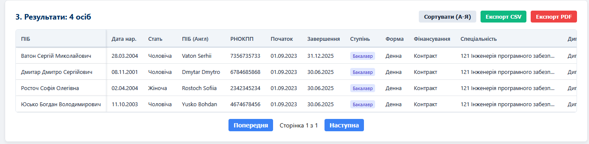
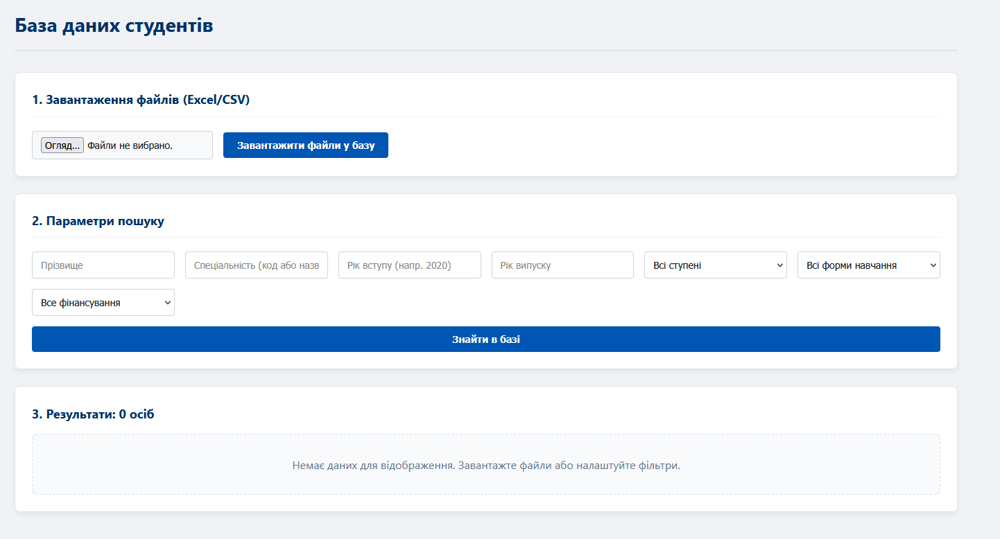
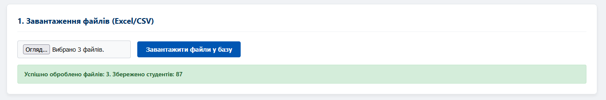
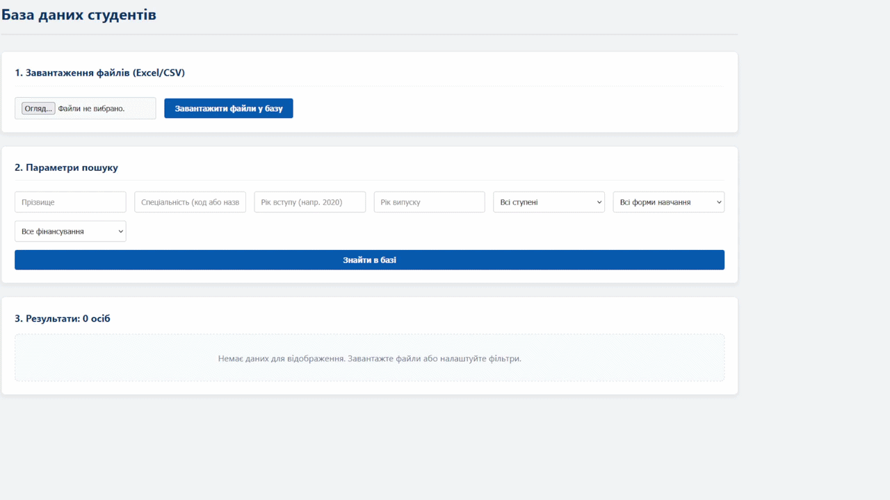

КНУ імені Василя Стефаника · Факультет математики та інформатики · Група КН-42 · 16.03–24.04.2026
Кучірка Л.І. · Спеціальність 122 «Комп'ютерні науки»
Alumni Database — сучасний веб-архів для завантаження, пошуку, фільтрації та експорту даних про студентів і випускників університету. Оптимізований для роботи з масовими вивантаженнями з ЄДЕБО у форматах Excel та CSV.
Моя роль (Роль 4): Frontend Logic & Reporting Developer — реалізація управління станом, підключення до бекенд-API, модуль сортування з урахуванням українського алфавіту, пагінація по 50 записів, генерація CSV та PDF звітів.
Хуки useState для фільтрів та результатів. Зміна фільтру → оновлення стану → рендер FilterSection.
Формування URLSearchParams → fetch('/api/alumni?...') → запис результатів у стан.
Клієнтське сортування з урахуванням українського алфавіту:
arr.sort((a,b) => a.fullName.localeCompare(b.fullName, 'uk'))
Відсортований масив та параметри пагінації обчислюються лише при зміні вхідних даних, без зайвих рендерів.
50 записів на сторінку. startIndex = (page−1)×50, totalPages = ceil(n/50).
BOM-мітка \uFEFF + екранування лапок → правильне відображення кирилиці у Microsoft Excel.
Ландшафтний формат. Динамічний заголовок залежно від фільтрів: «Список випускників (випуск 2024)».
const [filters, setFilters] = useState({ name: '', year: '', degree: '' }); const [results, setResults] = useState([]); const handleSearch = async () => { const params = new URLSearchParams(filters); const res = await fetch(`/api/alumni?${params}`); setResults(await res.json()); }; const sorted = useMemo(() => [...results].sort((a, b) => a.fullName.localeCompare(b.fullName, 'uk')), [results]); const csv = '\uFEFF' + rows.map(r => r.map(v => `"${String(v).replace(/"/g, '""')}"`).join(',')).join('\n');
Система апробована безпосередньо в умовах деканату факультету математики та інформатики. За допомогою розробленого застосунку було сформовано та перевірено списки випускників бакалаврів і магістрів за 2016–2025 рр. (10 навчальних років). Результати використано для фізичного сортування і групування особових справ студентів — понад 1 000+ записів оброблено без помилок. Система підтримує одночасний імпорт кількох файлів Excel/CSV та миттєвий пошук у базі.



Frontend Logic & Reporting
Група КН-42
UI/UX Frontend Developer
Група КН-42
Data Engineer
Група КН-42
Backend Developer
Група КН-42

| Тиждень | Дати | Зміст роботи | Моя роль |
|---|---|---|---|
| Тиж. 1 | 16–20.03 | Дослідження технологій. Настановча конференція, аналіз завдання. | Вивчення useState, useMemo, Fetch API, pdfMake, localeCompare |
| Тиж. 2 | 23–27.03 | Реалізація: App.jsx, handleSearch, пагінація | Управління станом, підключення до API, алгоритм сортування |
| Тиж. 3 | 30.03–03.04 | Допрацювання: useMemo, оптимізація, тестування | Мемоізація, виправлення помилок, код-рев'ю |
| Тиж. 4 | 06–10.04 | CSV / PDF модуль. Тестування повного функціоналу. | BOM-мітка CSV, pdfMake ландшафт, динамічний заголовок |
| Тиж. 5–6 | 13–24.04 | Робота з архівом деканату. Оформлення документації. | Генерація списків, сортування особових справ 2016–2025 |